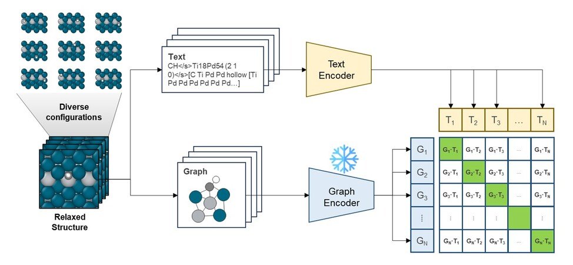
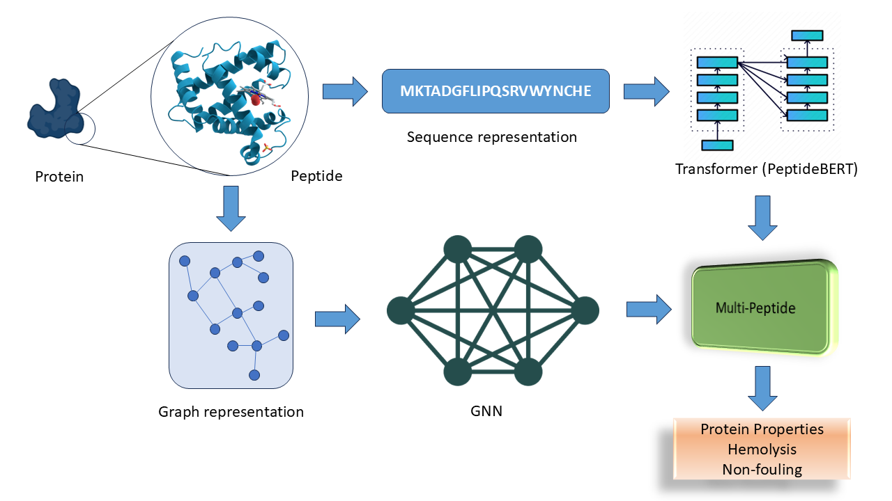
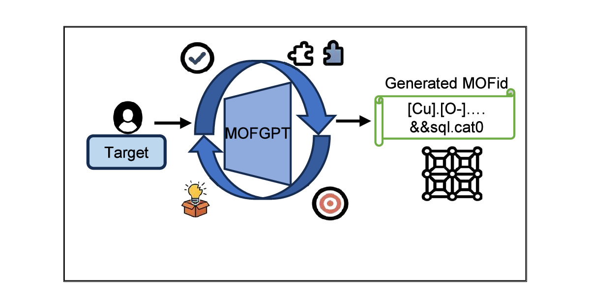
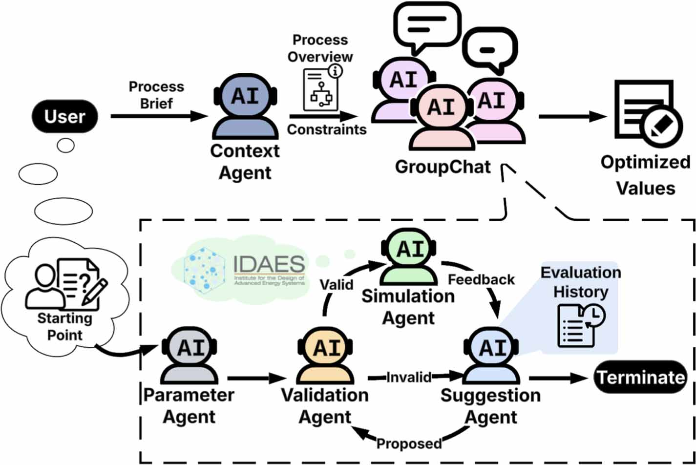
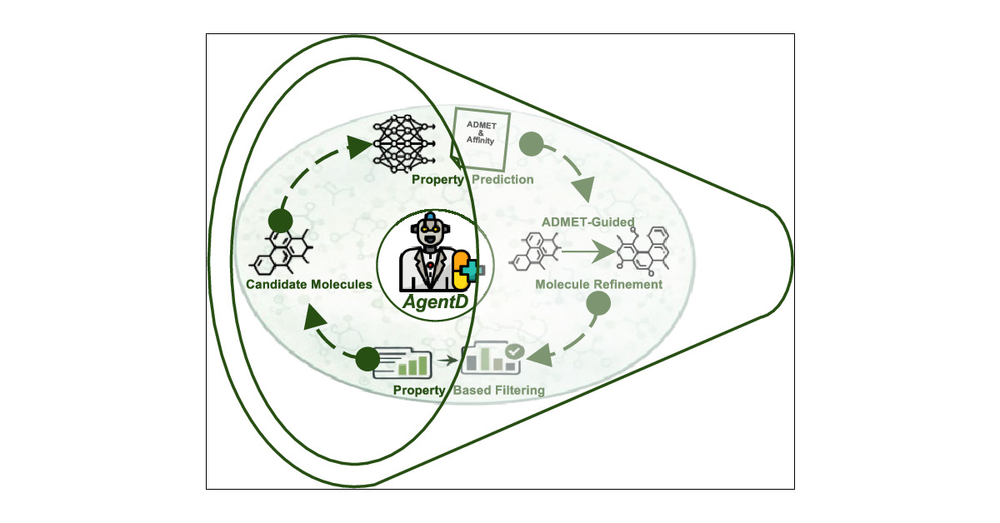
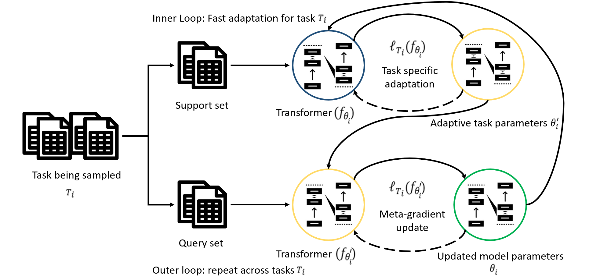
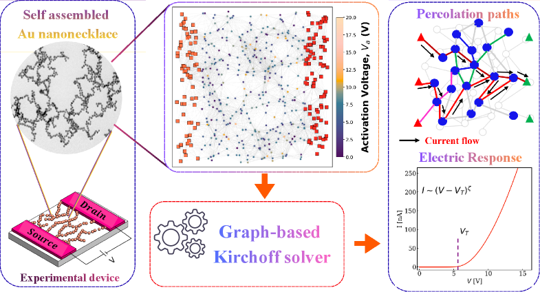

Research & Experience
Also see Google Scholar.
Publications
-

-

-

-

-

Preprints
-

Meta-Learning for Cross-Task Generalization in Protein Mutation Property PredictionarXiv:2510.20943, 2025A meta-learning framework for few-shot generalization across protein mutation prediction tasks.
-

Graph-Based Kirchhoff Modeling of Non-Ohmic Electron Transport in Self-Assembled Nanonecklace NetworksarXiv:2607.03698, 2026Graph-based modeling of electron transport in self-assembled nanonecklace networks.
Experience
-
Founding EngineerNov 2025 – Jun 2026Stealth startup, San Francisco Bay Area
- End-to-end ownership of machine learning, systems, and deployment for an AI-for-fintech product.
- Shipped through multiple 0-to-1 pivots across engineering, product, and go-to-market.
-
Machine Learning EngineerJun – Aug 2025Aikium Inc., Berkeley, CA
- Built multi-agent protein engineering pipelines integrating ESM, ProteinMPNN, AlphaFold, and RFdiffusion.
- Developed a modular model zoo and LangChain interface connecting generative and predictive workflows for wet-lab scientists.
-
Graduate ResearcherMay 2024 – Jun 2025MAIL Lab, Carnegie Mellon University; advisor: Prof. Amir Barati Farimani
- Multi-Peptide (JCIM 2024): multimodal peptide-property prediction from sequence and AlphaFold structures.
- Multimodal catalysis (Nature Machine Intelligence 2024): adsorption energy prediction without crystal-structure data.
- MOFGPT (JCIM 2025): reinforcement-learning-driven generative transformers for MOF design.
- Drug discovery agent (JCIM 2026): agentic pipelines combining LLMs, RAG, and property predictors.
- Meta-learning preprint on cross-task protein mutation prediction.
- Mentored junior researchers.
-
MITACS Globalink Research InternMay – Aug 2022University of Alberta; advisor: Prof. Zukui Li
- LSTM and Neural CDE surrogate models for hydroprocessing flow-rate optimization on real-time refinery data.
- Presented at the Three-Minute Thesis symposium. Talk
-
Research Fellow, Young Research FellowshipJun 2021 – May 2022IIT Madras; advisor: Prof. Himanshu Goyal
- Machine-learning surrogates for stiff chemical kinetics, reducing CFD simulation time by 90% for reactor design.
-
Machine Learning InternJun – Jul 2021Tirios AI, Chennai, India
- Deployed an image-recognition model on AWS SageMaker for automated appliance diagnostics.
Projects
- DreamPods. Founded an 11-person CMU team building LLM and text-to-speech pipelines that turn scientific material into accessible audio. Spotify
- GenAI Education Platform. A pipeline from PDF to lecture video using multimodal LLMs for automated STEM content creation.
- Character-Consistent Diffusion. Best Poster, CMU Generative AI course. Coherent visual storylines via latent alignment in diffusion models. Poster Code
- Refinery Process Optimization. MITACS, University of Alberta. LSTM and Neural CDE surrogates reaching 97% accuracy on real-time plant data. Talk
Honors and Service
- Peer Reviewer, J. Chem. Inf. Model.Oct 2025 – present
- Best Poster Award, CMU Generative AI courseNov 2024
- MITACS Globalink Research Scholarship2022
- Young Research Fellowship, IIT MadrasJul 2021